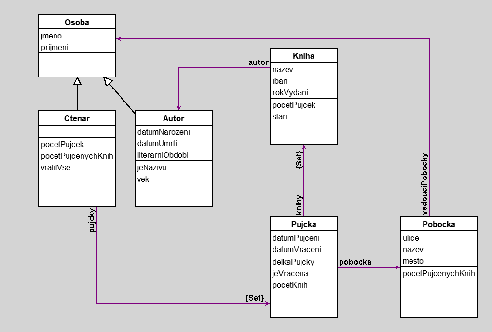

PujcovnaKnih
author(s): Mirek Nguyen
Semestralni projekt na pujcovani knih z ruznych pobocek.
Workspace
"Dotaz 1 - Vsechny pujcky z Mestske knihovny Praha 1 a delka pujcky je aspon tyden"
Pujcky select: [:pu | pu pobocka nazev = 'MK Praha 1 - Skolska' and: [pu delkaPujcky >= 7]]
"Dotaz 2 - Nejvice pujcovana kniha s literarnim smerem romantismus"
Knihy select: [: po | po autor literarniObdobi = 'Romantismus' and: [ po pocetPujcek = ((Knihy collect: [: f | f pocetPujcek]) max)]]
(Knihy select: [: po | po autor literarniObdobi = 'Romantismus']) collect: [:f | f pocetPujcek] max
Knihy select: [: po | po pocetPujcek = ((pocetPujcek collect: [: f | f pocetPujcek]) max)]
collect: [: f | f pocetPujcek]) max)
"Dotaz 3 - Pujcky, ktere maji delku kratsi nez prumer a ktere jsou vraceny"
Pujcky select: [:f | f delkaPujcky < ((Pujcky collect: [: p | p delkaPujcky ]) avg asFloat) and: [f jeVracena = true]]
"Dotaz 3 - Vsechny pujcky, ktere maji aspon jedno dilo od Shakespeara"
Pujcky select: [:f | f pobocka mesto = 'Praha' and: [f knihy anySatisfy: [:r | r autor prijmeni = 'Shakespeare']]]
"Dotaz 2 - Vsechny knihovny v Praze, ktere maji jakekoliv dilo od Shakespeara"
Pobocky select: [:po | po mesto = 'Praha' and: [po ]
"Dotaz 3 - Vsechny ctenari, kteri si pujcili Shakespeara v Praze"
Ctenari select: [: p | p pujcky select: [:f | f knihy anySatisfy: [:r | r nazev = "]]]
Pujcky select: [:f | f knihy anySatisfy: [:r | r nazev = "Hamlet"]]
Knihy select: [:r | r nazev = "Hamlet" ]
Knihy select: [:pu | pu nazev = "Hamlet" ]
Knihy select: [: po | po autor prijmeni = 'Shakespeare']
"Dotaz 3 - Nejvice pujcovana kniha s literarnim smerem romantismus"
Knihy select: [: po | po autor literarniObdobi = 'Romantismus' and: [ po pocetPujcek = ((Knihy collect: [: f | f pocetPujcek]) max)]]
Workspace Objects
-
Autori :Set
-
Ctenari :Set
-
Knihy :Set
-
Osoby :Set
-
Pobocky :Set
-
Pujcky :Set
-
a1 :Autor
-
a2 :Autor
-
a3 :Autor
-
a4 :Autor
-
a5 :Autor
-
c1 :Ctenar
-
c2 :Ctenar
-
c3 :Ctenar
-
c4 :Ctenar
-
c5 :Ctenar
-
k1 :Kniha
-
k10 :Kniha
-
k2 :Kniha
-
k3 :Kniha
-
k4 :Kniha
-
k5 :Kniha
-
k6 :Kniha
-
k7 :Kniha
-
k8 :Kniha
-
k9 :Kniha
-
o1 :Osoba
-
o2 :Osoba
-
o3 :Osoba
-
o4 :Osoba
-
o5 :Osoba
-
p1 :Pujcka
-
p10 :Pujcka
-
p2 :Pujcka
-
p3 :Pujcka
-
p4 :Pujcka
-
p5 :Pujcka
-
p6 :Pujcka
-
p7 :Pujcka
-
p8 :Pujcka
-
p9 :Pujcka
-
pob1 :Pobocka
-
pob2 :Pobocka
-
pob3 :Pobocka
-
pob4 :Pobocka
-
pob5 :Pobocka
Script
c1 := Ctenar new.
c1 jmeno: 'Jan'.
c1 prijmeni: 'Novak'.
c2 := Ctenar new.
c2 jmeno: 'Marie'.
c2 prijmeni: 'Svobodova'.
c3 := Ctenar new.
c3 jmeno: 'Petr'.
c3 prijmeni: 'Novotny'.
c4 := Ctenar new.
c4 jmeno: 'Eva'.
c4 prijmeni: 'Kovacova'.
c5 := Ctenar new.
c5 jmeno: 'Marek'.
c5 prijmeni: 'Svoboda'.
a1 := Autor new.
a1 jmeno: 'William'.
a1 prijmeni: 'Shakespeare'.
a1 literarniObdobi: 'Renesance'.
a1 datumNarozeni: '04-26-1564' asDate.
a1 datumUmrti: '04-23-1616' asDate.
a2 := Autor new.
a2 jmeno: 'Miguel'.
a2 prijmeni: 'Cervantes'.
a2 literarniObdobi: 'Baroko'.
a2 datumNarozeni: '09-29-1547' asDate.
a2 datumUmrti: '04-22-1616' asDate.
a3 := Autor new.
a3 jmeno: 'Jane'.
a3 prijmeni: 'Austen'.
a3 literarniObdobi: 'Romantismus'.
a3 datumNarozeni: '12-16-1775' asDate.
a3 datumUmrti: '07-18-1817' asDate.
a4 := Autor new.
a4 jmeno: 'Leo'.
a4 prijmeni: 'Tolstoy'.
a4 literarniObdobi: 'Realismus'.
a4 datumNarozeni: '09-09-1828' asDate.
a4 datumUmrti: '11-20-1910' asDate.
a5 := Autor new.
a5 jmeno: 'Johann Wolfgang'.
a5 prijmeni: 'von Goethe'.
a5 literarniObdobi: 'Romantismus'.
a5 datumNarozeni: '08-28-1749' asDate.
a5 datumUmrti: '03-22-1832' asDate.
o1 := Osoba new.
o1 jmeno: 'Tomáš'.
o1 prijmeni: 'Dvorák'.
o2 := Osoba new.
o2 jmeno: 'Michal'.
o2 prijmeni: 'Krátký'.
o3 := Osoba new.
o3 jmeno: 'Katerina'.
o3 prijmeni: 'Veselá'.
o4 := Osoba new.
o4 jmeno: 'Martin'.
o4 prijmeni: 'Malý'.
o5 := Osoba new.
o5 jmeno: 'Jana'.
o5 prijmeni: 'Horáková'.
k1 := Kniha new.
k1 nazev: 'Romeo a Julie'.
k1 autor: a1.
k1 iban: 'CZ12 3456 7890 1234 5678 90'.
k1 rokVydani: 1597.
k2 := Kniha new.
k2 nazev: 'Hamlet'.
k2 autor: a1.
k2 iban: 'CZ98 7654 3210 9876 5432 10'.
k2 rokVydani: 1603.
k3 := Kniha new.
k3 nazev: 'Dumyslný rytír Don Quijote z La Manchy'.
k3 autor: a2.
k3 iban: 'CZ11 2222 3333 4444 5555 66'.
k3 rokVydani: 1605.
k4 := Kniha new.
k4 nazev: 'Nové príhody Dumyslného rytíre Don Quijota'.
k4 autor: a2.
k4 iban: 'CZ77 8888 9999 0000 1111 22'.
k4 rokVydani: 1615.
k5 := Kniha new.
k5 nazev: 'Pýcha a predsudek'.
k5 autor: a3.
k5 iban: 'CZ33 4444 5555 6666 7777 88'.
k5 rokVydani: 1813.
k6 := Kniha new.
k6 nazev: 'Rozum a cit'.
k6 autor: a3.
k6 iban: 'CZ66 7777 8888 9999 0000 11'.
k6 rokVydani: 1811.
k7 := Kniha new.
k7 nazev: 'Vojna a mír'.
k7 autor: a4.
k7 iban: 'CZ44 5555 6666 7777 8888 99'.
k7 rokVydani: 1869.
k8 := Kniha new.
k8 nazev: 'Anna Karenina'.
k8 autor: a4.
k8 iban: 'CZ55 6666 7777 8888 9999 00'.
k8 rokVydani: 1877.
k9 := Kniha new.
k9 nazev: 'Utrpení mladého Werthera'.
k9 autor: a5.
k9 iban: 'CZ22 3333 4444 5555 6666 77'.
k9 rokVydani: 1774.
k10 := Kniha new.
k10 nazev: 'Faust'.
k10 autor: a5.
k10 iban: 'CZ00 1111 2222 3333 4444 55'.
k10 rokVydani: 1808.
pob1 := Pobocka new.
pob1 nazev: 'MK Praha 1 - Skolska'.
pob1 ulice: 'Školská 1267/30'.
pob1 mesto: 'Praha'.
pob2 := Pobocka new.
pob2 nazev: 'MK Praha 2 - Zahrebska'.
pob2 ulice: 'Záhrebská 158/20'.
pob2 mesto: 'Praha'.
pob3 := Pobocka new.
pob3 nazev: 'MK Praha 3 - Zizkov'.
pob3 ulice: 'Husitská 110/70'.
pob3 mesto: 'Praha'.
pob4 := Pobocka new.
pob4 nazev: 'MK Praha 4 - Pankrac'.
pob4 ulice: 'Na Veselí 542/5'.
pob4 mesto: 'Praha'.
pob5 := Pobocka new.
pob5 nazev: 'MK Praha 5 - Smichov'.
pob5 ulice: 'námestí 14. ríjna 83/15'.
pob5 mesto: 'Praha'.
p1 := Pujcka new.
p1 datumPujceni: '05-20-2023' asDate.
p1 datumVraceni: '05-27-2023' asDate.
p2 := Pujcka new.
p2 datumPujceni: '06-10-2023' asDate.
p2 datumVraceni: '06-15-2023' asDate.
p3 := Pujcka new.
p3 datumPujceni: '07-01-2023' asDate.
p3 datumVraceni: '07-05-2023' asDate.
p4 := Pujcka new.
p4 datumPujceni: '08-12-2023' asDate.
p4 datumVraceni: '08-18-2023' asDate.
p5 := Pujcka new.
p5 datumPujceni: '09-03-2023' asDate.
p5 datumVraceni: '09-08-2023' asDate.
p6 := Pujcka new.
p6 datumPujceni: '10-20-2023' asDate.
p6 datumVraceni: '11-25-2023' asDate.
p7 := Pujcka new.
p7 datumPujceni: '11-10-2023' asDate.
p7 datumVraceni: '11-25-2023' asDate.
p8 := Pujcka new.
p8 datumPujceni: '12-01-2023' asDate.
p8 datumVraceni: '12-16-2023' asDate.
p9 := Pujcka new.
p9 datumPujceni: '01-12-2023' asDate.
p9 datumVraceni: '01-18-2023' asDate.
p10 := Pujcka new.
p10 datumPujceni: '02-01-2023' asDate.
p10 datumVraceni: '03-31-2023' asDate.
p1 knihy add: k1; add: k3; add: k6.
p2 knihy add: k2; add: k4; add: k7; add: k9.
p3 knihy add: k5; add: k8.
p4 knihy add: k1; add: k4; add: k6; add: k9.
p5 knihy add: k2; add: k3; add: k5; add: k7.
p6 knihy add: k1; add: k2; add: k3; add: k4; add: k5.
p7 knihy add: k6; add: k7; add: k8; add: k9.
p8 knihy add: k2; add: k4; add: k6; add: k8.
p9 knihy add: k1; add: k3; add: k5; add: k7; add: k9.
p10 knihy add: k2; add: k4; add: k6; add: k8; add: k10.
p1 pobocka: pob1.
p2 pobocka: pob2.
p3 pobocka: pob3.
p4 pobocka: pob4.
p5 pobocka: pob5.
p6 pobocka: pob1.
p7 pobocka: pob2.
p8 pobocka: pob3.
p9 pobocka: pob4.
p10 pobocka: pob5.
pob1 vedouciPobocky: o5.
pob2 vedouciPobocky: o3.
pob3 vedouciPobocky: o2.
pob4 vedouciPobocky: o4.
pob5 vedouciPobocky: o1.
c1 pujcky add: p10; add: p9; add: p7.
c2 pujcky add: p6; add: p5.
c3 pujcky add: p1.
c4 pujcky add: p2; add: p8.
c5 pujcky add: p3; add: p4.
Osoby := Set new.
Osoby add: o1; add: o2; add: o3; add: o4; add: o5.
Osoby add: c1; add: c2; add: c3; add: c4; add: c5.
Osoby add: a1; add: a2; add: a3; add: a4; add: a5.
Ctenari := Set new.
Ctenari add: c1; add: c2; add: c3; add: c4; add: c5.
Autori := Set new.
Autori add: a1; add: a2; add: a3; add: a4; add: a5.
Knihy := Set new.
Knihy add: k1; add: k2; add: k3; add: k4; add: k5; add: k6; add: k7; add: k8; add: k9; add: k10.
Pobocky := Set new.
Pobocky add: pob1; add: pob2; add: pob3; add: pob4; add: pob5.
Pujcky := Set new.
Pujcky add: p1; add: p2; add: p3; add: p4; add: p5; add: p6; add: p7; add: p8; add: p9; add: p10.
Diagram

Classes
Osoba
|
instance variables
jmeno :String
prijmeni :String
|
methods
initialize
jmeno
jmeno:
prijmeni
prijmeni:
|
|
|
code of non-accessing methods:
Kniha
|
instance variables
autor :Object
iban :String
nazev :String
rokVydani :Number
|
methods
autor
autor:
iban
iban:
initialize
nazev
nazev:
pocetPujcek
rokVydani
rokVydani:
stari
|
|
|
code of non-accessing methods:
-
initialize
"generated by Daskalos"
super initialize.
nazev := nil.
iban := nil.
autor := nil.
rokVydani := nil.
-
pocetPujcek
^(Pujcka allInstances select: [:pu | pu knihy includes: self]) size
-
stari
^Date today year - rokVydani
Pujcka
|
instance variables
datumPujceni :Date
datumVraceni :Date
knihy :Set
pobocka :Object
|
methods
datumPujceni
datumPujceni:
datumVraceni
datumVraceni:
delkaPujcky
initialize
jeVracena
knihy
pobocka
pobocka:
|
|
|
code of non-accessing methods:
-
delkaPujcky
| datum |
datum := datumVraceni isNil ifTrue: [Date today] ifFalse: [datumVraceni].
^datum subtractDate: datumPujceni
-
initialize
"generated by Daskalos"
super initialize.
datumPujceni := nil.
datumVraceni := nil.
knihy := Set new.
pobocka := nil.
-
jeVracena
^datumVraceni notNil ifTrue: [true] ifFalse: [false]
Pobocka
|
instance variables
mesto :String
nazev :String
ulice :String
vedouciPobocky :Object
|
methods
initialize
mesto
mesto:
nazev
nazev:
pocetPujcenychKnih
ulice
ulice:
vedouciPobocky
vedouciPobocky:
|
|
|
code of non-accessing methods:
Autor
|
instance variables
datumNarozeni :Date
datumUmrti :Date
literarniObdobi :String
|
methods
datumNarozeni
datumNarozeni:
datumUmrti
datumUmrti:
initialize
jeNazivu
literarniObdobi
literarniObdobi:
vek
|
|
|
code of non-accessing methods:
-
initialize
"generated by Daskalos"
super initialize.
datumNarozeni := nil.
datumUmrti := nil.
literarniObdobi := nil.
-
jeNazivu
^self datumUmrti isNil ifTrue: [true] ifFalse: [false]
-
vek
| datum |
datum := datumUmrti isNil ifTrue: [Date today] ifFalse: [datumUmrti].
^((datum subtractDate: datumNarozeni) / 365.2422) truncated
Ctenar
|
instance variables
pujcky :Set
|
methods
initialize
pocetPujcek
pocetPujcenychKnih
pujcky
vratilVse
|
|
|
code of non-accessing methods:
-
initialize
"generated by Daskalos"
super initialize.
pujcky := Set new.
-
pocetPujcek
^self pujcky size
-
pocetPujcenychKnih
^(self pujcky collect: [:pu | pu knihy size]) sum
-
vratilVse
^(self pujcky anySatisfy: [:pu | pu datumVraceni isNil])
ifTrue: ['Ne']
ifFalse: ['Ano']
Links
Data file and
class source.
Generated by Daskalos - Object Modeling Tutor (C) 2006 V. Merunka
June 19, 2023